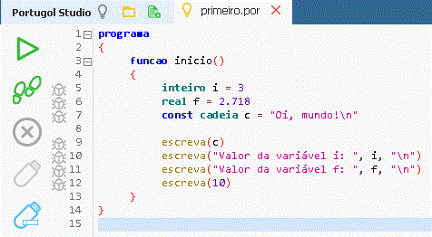

Algoritmos e Lógica Computacional que a empresa é capaz de implementar
A lógica computacional é a disciplina que usa o raciocínio lógico para projetar algoritmos, solucionar problemas e organizar instruções para computadores. Ela é fundamental para a programação, pois serve como a base para a criação de softwares, permitindo que as máquinas executem tarefas de forma estruturada e automática. É um campo que combina lógica matemática e ciência da computação para "ensinar" máquinas a pensar de maneira sequencial e a tomar decisões.
Um fluxograma é uma representação visual, em formato de diagrama, que descreve as etapas e o fluxo de atividades de um processo, utilizando símbolos e setas padronizados para indicar ações, decisões e o sentido da sequência. Ele serve para visualizar, documentar, analisar e otimizar processos em diversas áreas, como engenharia, administração e programação, tornando a comunicação e a compreensão mais claras e eficientes.

Os algoritmos são usados em praticamente todos os aspectos da vida moderna, desde a tecnologia (redes sociais, motores de busca, assistentes virtuais, e-commerce, sistemas financeiros) até tarefas quotidianas como receitas de cozinha ou manuais de instruções.
 O Bubble Sort é um algoritmo de ordenação simples que compara repetidamente pares de elementos adjacentes e os troca se estiverem fora de ordem, fazendo com que os elementos "flutuem" para as posições corretas, como bolhas. Ele é fácil de implementar e entender, sendo útil para conjuntos de dados pequenos ou para fins educacionais, mas é considerado ineficiente para listas grandes devido à sua complexidade de tempo quadrática, O(n²).
O Bubble Sort é um algoritmo de ordenação simples que compara repetidamente pares de elementos adjacentes e os troca se estiverem fora de ordem, fazendo com que os elementos "flutuem" para as posições corretas, como bolhas. Ele é fácil de implementar e entender, sendo útil para conjuntos de dados pequenos ou para fins educacionais, mas é considerado ineficiente para listas grandes devido à sua complexidade de tempo quadrática, O(n²).
 O Bubble Sort é um algoritmo de ordenação simples que compara repetidamente pares de elementos adjacentes e os troca se estiverem fora de ordem, fazendo com que os elementos "flutuem" para as posições corretas, como bolhas. Ele é fácil de implementar e entender, sendo útil para conjuntos de dados pequenos ou para fins educacionais, mas é considerado ineficiente para listas grandes devido à sua complexidade de tempo quadrática, O(n²).
O Bubble Sort é um algoritmo de ordenação simples que compara repetidamente pares de elementos adjacentes e os troca se estiverem fora de ordem, fazendo com que os elementos "flutuem" para as posições corretas, como bolhas. Ele é fácil de implementar e entender, sendo útil para conjuntos de dados pequenos ou para fins educacionais, mas é considerado ineficiente para listas grandes devido à sua complexidade de tempo quadrática, O(n²).

Portugol, também conhecido como Português estruturado, é uma família de linguagens de programação que possui como base a língua portuguesa. Algumas de suas variações podem ser consideradas pseudocódigo, e outras são linguagens completas, livres de contexto, com gramáticas definidas e implementações em editores ou compiladores. São usadas tanto para o estudo de algoritmos e estruturas de dados quanto para a criação de compiladores, interpretadores e ferramentas de diagramação, como geradores de fluxogramas.
O Portugol Studio é um Ambiente de Desenvolvimento Integrado (IDE) que facilita a aprendizagem de programação, especialmente para iniciantes, utilizando o Portugol, cujos comandos são escritos em português. A ferramenta oferece recursos como um editor de código com destaque de sintaxe, um depurador para executar o código passo a passo e um sistema de ajuda, permitindo que o usuário crie e teste algoritmos simples, aprenda a lógica de programação e até desenvolva jogos básicos.
Na programação, uma variável é um espaço nomeado na memória do computador cujo valor pode ser alterado durante a execução de um programa, enquanto uma constante é um espaço nomeado com um valor fixo e inalterável. As variáveis permitem flexibilidade ao guardar dados que mudam, como a pontuação de um jogador, e são usadas para criar lógica de programação dinâmica. As constantes, por outro lado, garantem a integridade de valores que não devem mudar, como o valor de π (Pi), facilitando a leitura do código e prevenindo erros acidentais.

Booleanos: Pode ser "verdadeiro" ou "falso" apenas. Serve para fazer e verificar condiçõ
Caracter: Apenas uma letra. Exemplo: "m"
Cadeia: Texto de qualquer tamanho, ou seja, uma cadeia de caracteres. Exemplo “Gosto de queijo coalho”
Inteiro: Qualquer número inteiro
Real: Qualquer número real
Vetor: Um grupo / lista de valores. Exemplo: real vetor[5] = [1,2,3,4,5]